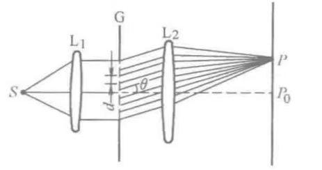

线光源发出的柱面波经透镜L1调制后成为平面波.
多缝的方向与线光源平行.
多缝的衍射图样在透镜L2的焦面上观察.
设多缝的方向是\(y_1\)方向，则显然多缝衍射图样的强度分布只沿\(x\)方向变化，衍射条纹是一些平行于\(y\)轴的亮条纹.
夫琅禾费多缝衍射中，多缝按其光栅常数\(d\)将入射波波面分成\(N\)个部分，每个部分成为一单缝而发生单缝夫琅禾费衍射.
由于单缝衍射场之间是相干的，因此多缝夫琅禾费衍射的复振幅分布为所有单缝夫琅禾费衍射复振幅的叠加，可以看作为单缝夫琅禾费衍射与多缝干涉的综合结果.
设P为L2后焦面上任一观察点，位于光轴上的中心单缝的夫琅禾费衍射图样在P点的复振幅为：
$$\tilde{E}(P) = A\left(\frac{\sin\alpha}{\alpha}\right)$$相邻单缝在\(P\)点产生的夫琅禾费衍射的幅值与中心单缝的相同，但产生一个相位差：
$$\begin{align} \delta &= k\cdot\Delta\\ &= \frac{2\pi}{\lambda}d\sin\theta \end{align}$$因此，多缝在\(P\)点产生的复振幅为\(N\)个振幅相同、相邻光束相位差相等的多光束干涉的结果：
由等比数列求和公式：
$$\left[1 + e^{i\delta} + e^{i2\delta} + \cdots + e^{i(N-1)\delta}\right] = \frac{1 - e^{iN\delta}}{1 - e^{i\delta}}$$ $$\begin{align}\because 1 - e^{i\theta} &= e^{i\theta/2}(e^{-i\theta/2} - e^{i\theta/2})\\&= e^{i\theta/2}\left(-2i\sin\frac{\theta}{2}\right)\end{align}$$ $$\begin{align} \therefore \left[1 + e^{i\delta} + e^{i2\delta} + \cdots + e^{i(N-1)\delta}\right] &= \frac{e^{i(N/2)\delta}\left(-2i\sin\frac{N\delta}{2}\right)}{e^{i\delta/2}\left(-2i\sin\frac{\delta}{2}\right)}\\ &= \left(\frac{\sin\frac{N\delta}{2}}{\sin\frac{\delta}{2}}\right)\exp\left[i(N-1)\frac{\delta}{2}\right] \end{align}$$这里用标量加法，是假设了振动方向平行.
P点的光强为：
$$I(P) = I_0\left(\frac{\sin\alpha}{\alpha}\right)^2\left(\frac{\sin\frac{N\delta}{2}}{\sin\frac{\delta}{2}}\right)^2$$一个单缝
可见，多缝衍射是衍射和干涉的共同结果.
单缝衍射因子与单缝本身的性质（缝宽、单缝范围内引入的振幅和相位的变化）有关.
多光束干涉因子来源于狭缝的周期性排列，与单缝本身的性质无关.